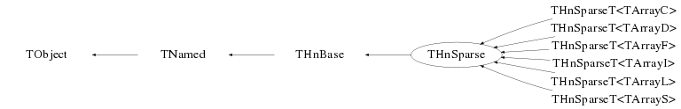
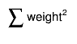

class THnSparse: public THnBase
Efficient multidimensional histogram.
Use a THnSparse instead of TH1 / TH2 / TH3 / array for histogramming when
only a small fraction of bins is filled. A 10-dimensional histogram with 10
bins per dimension has 10^10 bins; in a naive implementation this will not
fit in memory. THnSparse only allocates memory for the bins that have
non-zero bin content instead, drastically reducing both the memory usage
and the access time.
To construct a THnSparse object you must use one of its templated, derived
classes:
THnSparseD (typedef for THnSparseT<ArrayD>): bin content held by a Double_t,
THnSparseF (typedef for THnSparseT<ArrayF>): bin content held by a Float_t,
THnSparseL (typedef for THnSparseT<ArrayL>): bin content held by a Long_t,
THnSparseI (typedef for THnSparseT<ArrayI>): bin content held by an Int_t,
THnSparseS (typedef for THnSparseT<ArrayS>): bin content held by a Short_t,
THnSparseC (typedef for THnSparseT<ArrayC>): bin content held by a Char_t,
They take name and title, the number of dimensions, and for each dimension
the number of bins, the minimal, and the maximal value on the dimension's
axis. A TH2 h("h","h",10, 0., 10., 20, -5., 5.) would correspond to
Int_t bins[2] = {10, 20};
Double_t xmin[2] = {0., -5.};
Double_t xmax[2] = {10., 5.};
THnSparse hs("hs", "hs", 2, bins, min, max);
* Filling
A THnSparse is filled just like a regular histogram, using
THnSparse::Fill(x, weight), where x is a n-dimensional Double_t value.
To take errors into account, Sumw2() must be called before filling the
histogram.
Bins are allocated as needed; the status of the allocation can be observed
by GetSparseFractionBins(), GetSparseFractionMem().
* Fast Bin Content Access
When iterating over a THnSparse one should only look at filled bins to save
processing time. The number of filled bins is returned by
THnSparse::GetNbins(); the bin content for each (linear) bin number can
be retrieved by THnSparse::GetBinContent(linidx, (Int_t*)coord).
After the call, coord will contain the bin coordinate of each axis for the bin
with linear index linidx. A possible call would be
cout << hs.GetBinContent(0, coord);
cout <<" is the content of bin [x = " << coord[0] "
<< " | y = " << coord[1] << "]" << endl;
* Efficiency
TH1 and TH2 are generally faster than THnSparse for one and two dimensional
distributions. THnSparse becomes competitive for a sparsely filled TH3
with large numbers of bins per dimension. The tutorial hist/sparsehist.C
shows the turning point. On a AMD64 with 8GB memory, THnSparse "wins"
starting with a TH3 with 30 bins per dimension. Using a THnSparse for a
one-dimensional histogram is only reasonable if it has a huge number of bins.
* Projections
The dimensionality of a THnSparse can be reduced by projecting it to
1, 2, 3, or n dimensions, which can be represented by a TH1, TH2, TH3, or
a THnSparse. See the Projection() members. To only project parts of the
histogram, call
THnSparse::GetAxis(12)->SetRange(from_bin, to_bin);
* Internal Representation
An entry for a filled bin consists of its n-dimensional coordinates and
its bin content. The coordinates are compacted to use as few bits as
possible; e.g. a histogram with 10 bins in x and 20 bins in y will only
use 4 bits for the x representation and 5 bits for the y representation.
This is handled by the internal class THnSparseCompactBinCoord.
Bin data (content and coordinates) are allocated in chunks of size
fChunkSize; this parameter can be set when constructing a THnSparse. Each
chunk is represented by an object of class THnSparseArrayChunk.
Translation from an n-dimensional bin coordinate to the linear index within
the chunks is done by GetBin(). It creates a hash from the compacted bin
coordinates (the hash of a bin coordinate is the compacted coordinate itself
if it takes less than 8 bytes, the size of a Long64_t.
This hash is used to lookup the linear index in the TExMap member fBins;
the coordinates of the entry fBins points to is compared to the coordinates
passed to GetBin(). If they do not match, these two coordinates have the same
hash - which is extremely unlikely but (for the case where the compact bin
coordinates are larger than 4 bytes) possible. In this case, fBinsContinued
contains a chain of linear indexes with the same hash. Iterating through this
chain and comparing each bin coordinates with the one passed to GetBin() will
retrieve the matching bin.
Function Members (Methods)
This is an abstract class, constructors will not be documented.
Look at the header to check for available constructors.
public:
| virtual | ~THnSparse() |
| void | TObject::AbstractMethod(const char* method) const |
| void | THnBase::Add(const THnBase* h, Double_t c = 1.) |
| void | THnBase::Add(const TH1* hist, Double_t c = 1.) |
| void | AddBinContent(const Int_t* idx, Double_t v = 1.) |
| virtual void | AddBinContent(Long64_t bin, Double_t v = 1.) |
| virtual void | AddBinError2(Long64_t bin, Double_t e2) |
| virtual void | TObject::AppendPad(Option_t* option = "") |
| virtual void | THnBase::Browse(TBrowser* b) |
| void | THnBase::CalculateErrors(Bool_t calc = kTRUE) |
| static TClass* | Class() |
| virtual const char* | TObject::ClassName() const |
| virtual void | TNamed::Clear(Option_t* option = "") |
| virtual TObject* | TNamed::Clone(const char* newname = "") const |
| virtual Int_t | TNamed::Compare(const TObject* obj) const |
| Double_t | THnBase::ComputeIntegral() |
| virtual void | TNamed::Copy(TObject& named) const |
| virtual ROOT::THnBaseBinIter* | CreateIter(Bool_t respectAxisRange) const |
| static THnSparse* | CreateSparse(const char* name, const char* title, const TH1* h1, Int_t chunkSize = 1024*16) |
| static THnSparse* | CreateSparse(const char* name, const char* title, const THnBase* hn, Int_t chunkSize = 1024*16) |
| virtual void | TObject::Delete(Option_t* option = "")MENU |
| virtual Int_t | TObject::DistancetoPrimitive(Int_t px, Int_t py) |
| void | THnBase::Divide(const THnBase* h) |
| void | THnBase::Divide(const THnBase* h1, const THnBase* h2, Double_t c1 = 1., Double_t c2 = 1., Option_t* option = "") |
| virtual void | TObject::Draw(Option_t* option = "") |
| virtual void | TObject::DrawClass() constMENU |
| virtual TObject* | TObject::DrawClone(Option_t* option = "") constMENU |
| virtual void | TObject::Dump() constMENU |
| virtual void | TObject::Error(const char* method, const char* msgfmt) const |
| virtual void | TObject::Execute(const char* method, const char* params, Int_t* error = 0) |
| virtual void | TObject::Execute(TMethod* method, TObjArray* params, Int_t* error = 0) |
| virtual void | TObject::ExecuteEvent(Int_t event, Int_t px, Int_t py) |
| virtual void | TObject::Fatal(const char* method, const char* msgfmt) const |
| Long64_t | THnBase::Fill(const Double_t* x, Double_t w = 1.) |
| Long64_t | THnBase::Fill(const char** name, Double_t w = 1.) |
| virtual void | TNamed::FillBuffer(char*& buffer) |
| virtual TObject* | TObject::FindObject(const char* name) const |
| virtual TObject* | TObject::FindObject(const TObject* obj) const |
| TFitResultPtr | THnBase::Fit(TF1* f1, Option_t* option = "", Option_t* goption = "") |
| TAxis* | THnBase::GetAxis(Int_t dim) const |
| virtual Long64_t | GetBin(const Int_t* idx) const |
| virtual Long64_t | GetBin(const Double_t* x) const |
| virtual Long64_t | GetBin(const char** name) const |
| virtual Long64_t | GetBin(const Int_t* idx, Bool_t allocate = kTRUE) |
| virtual Long64_t | GetBin(const Double_t* x, Bool_t allocate = kTRUE) |
| virtual Long64_t | GetBin(const char** name, Bool_t allocate = kTRUE) |
| Double_t | GetBinContent(const Int_t* idx) const |
| virtual Double_t | GetBinContent(Long64_t bin, Int_t* idx = 0) const |
| Double_t | THnBase::GetBinError(const Int_t* idx) const |
| Double_t | THnBase::GetBinError(Long64_t linidx) const |
| virtual Double_t | GetBinError2(Long64_t linidx) const |
| Bool_t | THnBase::GetCalculateErrors() const |
| Int_t | GetChunkSize() const |
| virtual Option_t* | TObject::GetDrawOption() const |
| static Long_t | TObject::GetDtorOnly() |
| Double_t | THnBase::GetEntries() const |
| virtual const char* | TObject::GetIconName() const |
| TObjArray* | THnBase::GetListOfAxes() |
| const TObjArray* | THnBase::GetListOfAxes() const |
| TList* | THnBase::GetListOfFunctions() |
| virtual const char* | TNamed::GetName() const |
| virtual Long64_t | GetNbins() const |
| Int_t | GetNChunks() const |
| Int_t | THnBase::GetNdimensions() const |
| virtual char* | TObject::GetObjectInfo(Int_t px, Int_t py) const |
| static Bool_t | TObject::GetObjectStat() |
| virtual Option_t* | TObject::GetOption() const |
| void | THnBase::GetRandom(Double_t* rand, Bool_t subBinRandom = kTRUE) |
| Double_t | GetSparseFractionBins() const |
| Double_t | GetSparseFractionMem() const |
| Double_t | THnBase::GetSumw() const |
| Double_t | THnBase::GetSumw2() const |
| Double_t | THnBase::GetSumwx(Int_t dim) const |
| Double_t | THnBase::GetSumwx2(Int_t dim) const |
| virtual const char* | TNamed::GetTitle() const |
| virtual UInt_t | TObject::GetUniqueID() const |
| Double_t | THnBase::GetWeightSum() const |
| virtual Bool_t | TObject::HandleTimer(TTimer* timer) |
| virtual ULong_t | TNamed::Hash() const |
| virtual void | TObject::Info(const char* method, const char* msgfmt) const |
| virtual Bool_t | TObject::InheritsFrom(const char* classname) const |
| virtual Bool_t | TObject::InheritsFrom(const TClass* cl) const |
| virtual void | TObject::Inspect() constMENU |
| void | TObject::InvertBit(UInt_t f) |
| virtual TClass* | IsA() const |
| virtual Bool_t | TObject::IsEqual(const TObject* obj) const |
| virtual Bool_t | THnBase::IsFolder() const |
| Bool_t | THnBase::IsInRange(Int_t* coord) const |
| Bool_t | TObject::IsOnHeap() const |
| virtual Bool_t | TNamed::IsSortable() const |
| Bool_t | TObject::IsZombie() const |
| virtual void | TNamed::ls(Option_t* option = "") const |
| void | TObject::MayNotUse(const char* method) const |
| Long64_t | THnBase::Merge(TCollection* list) |
| void | THnBase::Multiply(const THnBase* h) |
| void | THnBase::Multiply(TF1* f, Double_t c = 1.) |
| virtual Bool_t | TObject::Notify() |
| void | TObject::Obsolete(const char* method, const char* asOfVers, const char* removedFromVers) const |
| static void | TObject::operator delete(void* ptr) |
| static void | TObject::operator delete(void* ptr, void* vp) |
| static void | TObject::operator delete[](void* ptr) |
| static void | TObject::operator delete[](void* ptr, void* vp) |
| void* | TObject::operator new(size_t sz) |
| void* | TObject::operator new(size_t sz, void* vp) |
| void* | TObject::operator new[](size_t sz) |
| void* | TObject::operator new[](size_t sz, void* vp) |
| virtual void | TObject::Paint(Option_t* option = "") |
| virtual void | TObject::Pop() |
| virtual void | THnBase::Print(Option_t* option = "") const |
| void | THnBase::PrintBin(Int_t* coord, Option_t* options) const |
| void | THnBase::PrintBin(Long64_t idx, Option_t* options) const |
| void | THnBase::PrintEntries(Long64_t from = 0, Long64_t howmany = -1, Option_t* options = 0) const |
| TH1D* | Projection(Int_t xDim, Option_t* option = "") const |
| TH2D* | Projection(Int_t yDim, Int_t xDim, Option_t* option = "") const |
| THnSparse* | Projection(Int_t ndim, const Int_t* dim, Option_t* option = "") const |
| TH3D* | Projection(Int_t xDim, Int_t yDim, Int_t zDim, Option_t* option = "") const |
| THnBase* | THnBase::ProjectionND(Int_t ndim, const Int_t* dim, Option_t* option = "") const |
| virtual Int_t | TObject::Read(const char* name) |
| THnSparse* | Rebin(Int_t group) const |
| THnSparse* | Rebin(const Int_t* group) const |
| void | THnBase::RebinnedAdd(const THnBase* h, Double_t c = 1.) |
| virtual void | TObject::RecursiveRemove(TObject* obj) |
| virtual void | Reset(Option_t* option = "") |
| void | TObject::ResetBit(UInt_t f) |
| virtual void | TObject::SaveAs(const char* filename = "", Option_t* option = "") constMENU |
| virtual void | TObject::SavePrimitive(basic_ostream<char,char_traits<char> >& out, Option_t* option = "") |
| void | THnBase::Scale(Double_t c) |
| void | SetBinContent(const Int_t* idx, Double_t v) |
| virtual void | SetBinContent(Long64_t bin, Double_t v) |
| void | THnBase::SetBinEdges(Int_t idim, const Double_t* bins) |
| void | THnBase::SetBinError(const Int_t* idx, Double_t e) |
| void | THnBase::SetBinError(Long64_t bin, Double_t e) |
| virtual void | SetBinError2(Long64_t bin, Double_t e2) |
| void | TObject::SetBit(UInt_t f) |
| void | TObject::SetBit(UInt_t f, Bool_t set) |
| virtual void | TObject::SetDrawOption(Option_t* option = "")MENU |
| static void | TObject::SetDtorOnly(void* obj) |
| void | THnBase::SetEntries(Double_t entries) |
| virtual void | SetFilledBins(Long64_t nbins) |
| virtual void | TNamed::SetName(const char* name)MENU |
| virtual void | TNamed::SetNameTitle(const char* name, const char* title) |
| static void | TObject::SetObjectStat(Bool_t stat) |
| virtual void | THnBase::SetTitle(const char* title) |
| virtual void | TObject::SetUniqueID(UInt_t uid) |
| virtual void | ShowMembers(TMemberInspector&) |
| virtual Int_t | TNamed::Sizeof() const |
| virtual void | Streamer(TBuffer&) |
| void | StreamerNVirtual(TBuffer& ClassDef_StreamerNVirtual_b) |
| virtual void | Sumw2() |
| virtual void | TObject::SysError(const char* method, const char* msgfmt) const |
| Bool_t | TObject::TestBit(UInt_t f) const |
| Int_t | TObject::TestBits(UInt_t f) const |
| virtual void | TObject::UseCurrentStyle() |
| virtual void | TObject::Warning(const char* method, const char* msgfmt) const |
| virtual Int_t | TObject::Write(const char* name = 0, Int_t option = 0, Int_t bufsize = 0) |
| virtual Int_t | TObject::Write(const char* name = 0, Int_t option = 0, Int_t bufsize = 0) const |
protected:
| THnSparseArrayChunk* | AddChunk() |
| void | THnBase::AddInternal(const THnBase* h, Double_t c, Bool_t rebinned) |
| Bool_t | THnBase::CheckConsistency(const THnBase* h, const char* tag) const |
| THnBase* | THnBase::CloneEmpty(const char* name, const char* title, const TObjArray* axes, Bool_t keepTargetAxis) const |
| TH1* | THnBase::CreateHist(const char* name, const char* title, const TObjArray* axes, Bool_t keepTargetAxis) const |
| static THnBase* | THnBase::CreateHnAny(const char* name, const char* title, const TH1* h1, Bool_t sparse, Int_t chunkSize = 1024*16) |
| static THnBase* | THnBase::CreateHnAny(const char* name, const char* title, const THnBase* hn, Bool_t sparse, Int_t chunkSize = 1024*16) |
| virtual void | TObject::DoError(int level, const char* location, const char* fmt, va_list va) const |
| virtual void | FillBin(Long64_t bin, Double_t w) |
| void | THnBase::FillBinBase(Double_t w) |
| void | FillExMap() |
| virtual TArray* | GenerateArray() const |
| Long64_t | GetBinIndexForCurrentBin(Bool_t allocate) |
| THnSparseArrayChunk* | GetChunk(Int_t idx) const |
| THnSparseCompactBinCoord* | GetCompactCoord() const |
| void | THnBase::Init(const char* name, const char* title, const TObjArray* axes, Bool_t keepTargetAxis, Int_t chunkSize = 1024*16) |
| virtual void | InitStorage(Int_t* nbins, Int_t chunkSize) |
| void | TObject::MakeZombie() |
| Bool_t | THnBase::PrintBin(Long64_t idx, Int_t* coord, Option_t* options) const |
| TObject* | THnBase::ProjectionAny(Int_t ndim, const Int_t* dim, Bool_t wantNDim, Option_t* option = "") const |
| THnBase* | THnBase::RebinBase(Int_t group) const |
| THnBase* | THnBase::RebinBase(const Int_t* group) const |
| virtual void | Reserve(Long64_t nbins) |
| void | THnBase::ResetBase(Option_t* option = "") |
| void | THnBase::UpdateXStat(const Double_t* x, Double_t w = 1.) |
Data Members
public:
| enum THnBase::[unnamed] { | kNoInt | |
| kValidInt | ||
| kInvalidInt | ||
| }; | ||
| enum TObject::EStatusBits { | kCanDelete | |
| kMustCleanup | ||
| kObjInCanvas | ||
| kIsReferenced | ||
| kHasUUID | ||
| kCannotPick | ||
| kNoContextMenu | ||
| kInvalidObject | ||
| }; | ||
| enum TObject::[unnamed] { | kIsOnHeap | |
| kNotDeleted | ||
| kZombie | ||
| kBitMask | ||
| kSingleKey | ||
| kOverwrite | ||
| kWriteDelete | ||
| }; |
protected:
| TObjArray | THnBase::fAxes | axes of the histogram |
| TObjArray | THnBase::fBrowsables | ! browser-helpers for each axis |
| Double_t | THnBase::fEntries | number of entries, spread over chunks |
| Double_t* | THnBase::fIntegral | ! array with bin weight sums |
| enum THnBase:: | THnBase::fIntegralStatus | ! status of integral |
| TString | TNamed::fName | object identifier |
| Int_t | THnBase::fNdimensions | number of dimensions |
| TString | TNamed::fTitle | object title |
| Double_t | THnBase::fTsumw | total sum of weights |
| Double_t | THnBase::fTsumw2 | total sum of weights squared; -1 if no errors are calculated |
| TArrayD | THnBase::fTsumwx | total sum of weight*X for each dimension |
| TArrayD | THnBase::fTsumwx2 | total sum of weight*X*X for each dimension |
private:
| TObjArray | fBinContent | array of THnSparseArrayChunk |
| TExMap | fBins | ! filled bins |
| TExMap | fBinsContinued | ! filled bins for non-unique hashes, containing pairs of (bin index 0, bin index 1) |
| Int_t | fChunkSize | number of entries for each chunk |
| THnSparseCompactBinCoord* | fCompactCoord | ! compact coordinate |
| Long64_t | fFilledBins | number of filled bins |
Class Charts



Function documentation
void InitStorage(Int_t* nbins, Int_t chunkSize)
Initialize the storage of a histogram created via Init()
Long64_t GetBin(const Double_t* x, Bool_t allocate = kTRUE)
Get the bin index for the n dimensional tuple x, allocate one if it doesn't exist yet and "allocate" is true.
Long64_t GetBin(const char* name[], Bool_t allocate /* = kTRUE */)
Get the bin index for the n dimensional tuple addressed by "name", allocate one if it doesn't exist yet and "allocate" is true.
Long64_t GetBin(const Int_t* idx, Bool_t allocate = kTRUE)
Get the bin index for the n dimensional coordinates coord, allocate one if it doesn't exist yet and "allocate" is true.
Double_t GetBinContent(Long64_t bin, Int_t* idx = 0) const
Return the content of the filled bin number "idx".
If coord is non-null, it will contain the bin's coordinates for each axis
that correspond to the bin.
Double_t GetBinError2(Long64_t linidx) const
Get square of the error of bin addressed by linidx as
If errors are not enabled (via Sumw2() or CalculateErrors()) return contents.
Long64_t GetBinIndexForCurrentBin(Bool_t allocate)
Return the index for fCurrentBinIndex. If it doesn't exist then return -1, or allocate a new bin if allocate is set
Double_t GetSparseFractionMem() const
Return the amount of used memory over memory that would be used by a non-sparse n-dimensional histogram. The value is approximate.
ROOT::THnBaseBinIter* CreateIter(Bool_t respectAxisRange) const
void SetBinError2(Long64_t bin, Double_t e2)
Set error of bin with index "bin" to "e", enable errors if needed
void AddBinError2(Long64_t bin, Double_t e2)
Add "e" to error of bin with index "bin", enable errors if needed
THnSparseArrayChunk* GetChunk(Int_t idx) const
TArray* GenerateArray() const
void FillBin(Long64_t bin, Double_t w)
Increment the bin content of "bin" by "w", return the bin index.
chunk-> AddBinContent(const Int_t* idx, Double_t v = 1.)
THnSparse* CreateSparse(const char* name, const char* title, const TH1* h1, Int_t chunkSize = 1024*16)
THnSparse* CreateSparse(const char* name, const char* title, const THnBase* hn, Int_t chunkSize = 1024*16)
void SetBinContent(const Int_t* idx, Double_t v)
Forwards to THnBase::SetBinContent(). Non-virtual, CINT-compatible replacement of a using declaration.
Double_t GetBinContent(const Int_t* idx) const
Forwards to THnBase::GetBinContent() overload. Non-virtual, CINT-compatible replacement of a using declaration.
TH1D* Projection(Int_t xDim, Option_t* option = "") const
Forwards to THnBase::Projection(). Non-virtual, as a CINT-compatible replacement of a using declaration.
return Projection(xDim, option)
TH2D* Projection(Int_t yDim, Int_t xDim, Option_t* option = "") const
Forwards to THnBase::Projection(). Non-virtual, as a CINT-compatible replacement of a using declaration.
TH3D* Projection(Int_t xDim, Int_t yDim, Int_t zDim, Option_t* option = "") const
Forwards to THnBase::Projection(). Non-virtual, as a CINT-compatible replacement of a using declaration.